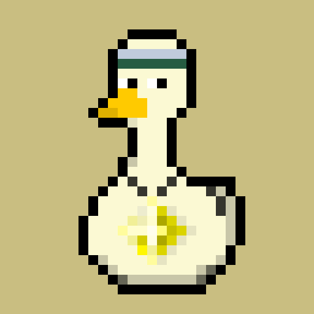
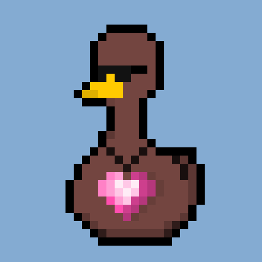
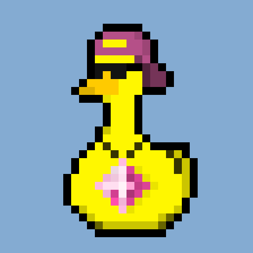
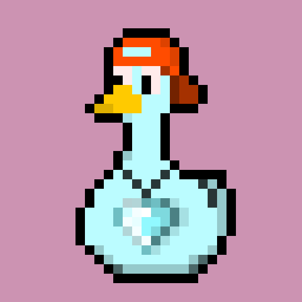
Что такое TON Ducks
Это 10 000 уникально сгенерированных уток NFT,
нет двух абсолютно одинаковых,
и каждая из них официально может принадлежать
каждому на блокчейне The Open Network (TON)
Это 10 000 уникально сгенерированных уток NFT,
нет двух абсолютно одинаковых,
и каждая из них официально может принадлежать
каждому на блокчейне The Open Network (TON)
Вариации
Каждый TON Ducks сгенерирован с определённым
алгоритмом и имеет свою ценность!
алгоритмом и имеет свою ценность!
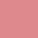
Цвет фона
Существует всего 5 цветов фона для наших уток
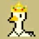
Головные уборы
Существует 25 вариантов головных уборов для уток и каждые из них по-своему прекрасны
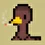
Сигареты и трубки
Есть 2 вариации уток, которые иногда покуривают, а иногда дымят своей длинной деревянной трубкой
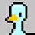
Цвет уток
Из 5 разных цветов состоят наши утки, некоторые из них очень редкие
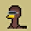
Глаза и очки
Ну как же без брутальных очков ? Глаза и очки уток состоят из 10 разных видов
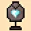
Алмазы
Но главное украшение и ценность уток, это драгоценные камни, их 21 вариации
Карта проекта
1 Квартал 2022 года
Генерация 10 000 NFT TON Ducks, подготовка к размещению на маркетплейс
Запуск пре-сейла и первичная популяризация проекта
Официальный листинг на маркетплейс и реализация продаж
1 Квартал 2022 года
Запуск социальных сетей с целью продвижения проекта, увеличения спроса и ценности коллекции
2 Квартал 2022 года
Сжигание 20-30% коллекции для увеличения ценности наших NFT
2 Квартал 2022 года
Маркетинговый анализ и продвижение проекта
Команда TON Ducks
Нас объединяет желание быть одним из первых
NFT проектов на блокчейне The Open Network. TON Ducks первый
и основной проект в сети TON, и далеко не последний!
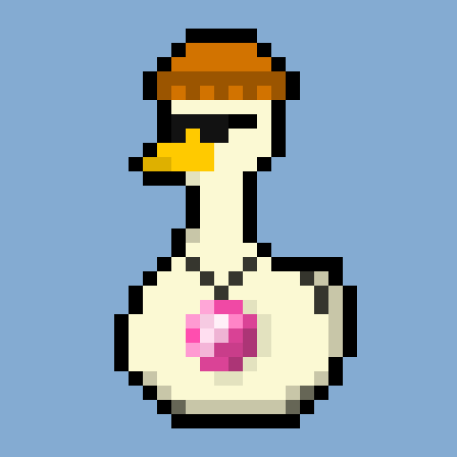
Hl
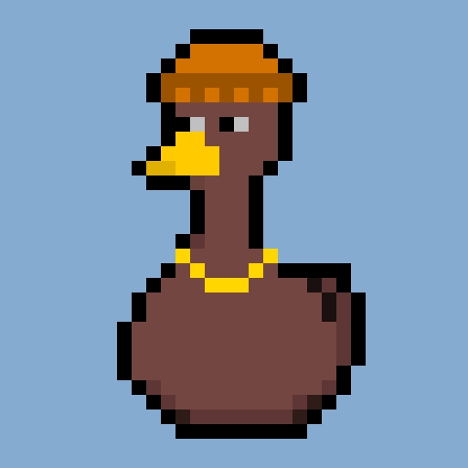
Ed
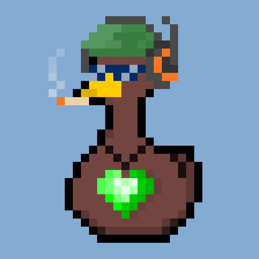
An